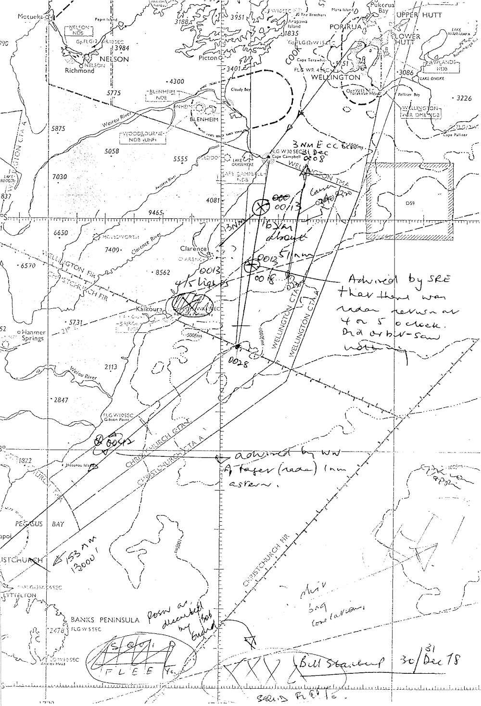
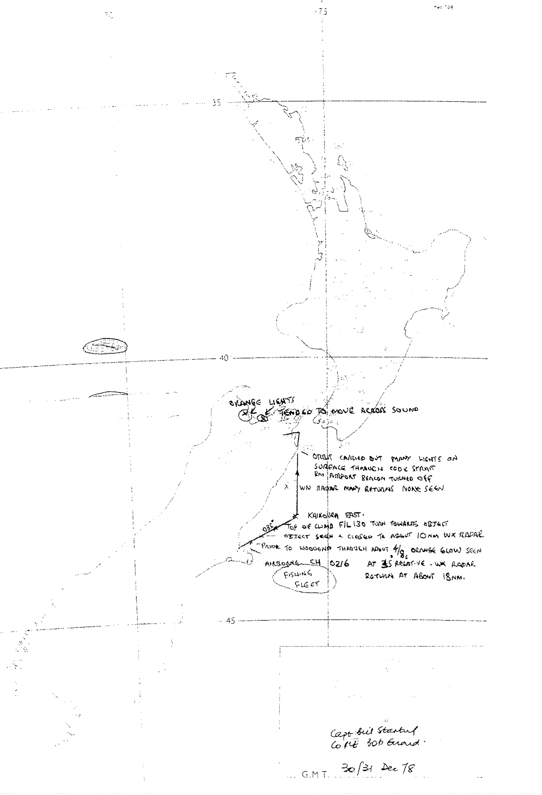
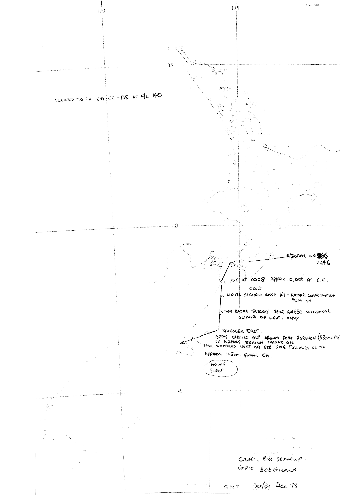

• Date 31st December 1978 • Time 0:42–3:15AM • Place South Island
• Date 31st December 1978 • Time 0:42–3:15AM • Place South Island
• Date 31st December 1978 • Time 0:42–3:15AM • Place South Island
Report
SUMMARY OF INTERVIEW WITH CAPTAIN W. STARTUP
1.Captain Startup with First Officer Guard were the crew of a SAFE argosy that took off Wellington 30 Dec 78 at 2346 hours to proceed via Cape Campbell, abeam Kaikoura thence Motunau Island to Christchurch. The aircraft radar was not used on the South-bound leg to Christchurch.
2.At 310013 while climbing to 14,000 feet the aircraft crew observed four to five lights close to the surface near the coast and with the lights of Kaikoura in the background. The crew asked Wellington ATC Radar controller whether there were any radar returns in that area. Wellington Radar Controller replied that they did have radar contacts 13 nautical miles ahead of the aircraft. The crew saw ‘a pulsing’ type of white light that looked like [a] helicopter search light zooming onto the beach north side of Kaikoura peninsula. The crew could not relate these lights to the Wellington radar returns. (My feeling is that they were the same four or five radar contacts that Wellington Radar was plotting in Clarence River Mouth area).
3.310018 when the aircraft was about ten miles northeast of the Clarence River Mouth Wellington Radar advised crew that there was a radar return behind them. They orbited and saw nothing.
4.310042 when the aircraft was about ten miles northeast of Motunau Island Wellington Radar advised that they had a radar target one mile from the aircraft which appeared as a larger radar return than the aircraft and appeared to be tracking the aircraft. Captain Startup carried out a left orbit but neither he nor First Officer Guard saw anything. Christchurch radar was not operating for ATC purposes at this time.
5.Just before crossing the coast near Woodend the crew observed what appeared to be a white light on the starboard side of the aircraft and radar advised (which radar?) that there was a target at three o’clock to the aircraft that ‘moved off’ when the Argosy was on short finals, about 1.5 miles from touchdown.
6.When taxiing to dispersal area the crew and the controllers in the tower observed lights to the right of Sugar Loaf Hill which had the same pulsating characteristics as the lights seen earlier in the flight? (speculative)
7.The aircraft departed Christchurch 310216 and climbed out on the 033 degrees radial. Both crew members observed a big white light to the northeast. The aircraft was then seven miles northeast of Christchurch with the aircraft radar on ‘mapping mode’. With the aircraft radar on the fifty mile range the return appeared as a small blip at two o’clock. On the twenty mile scale the image appeared at 18 miles and was 3/8" in length. Thus the radar return was about 25 miles from Christchurch Airport to the northeast. (Some doubt as to whether the light that was observed and the radar contact were one and the same, bearing in mind there would be no background upon which the crew could visually assess the distance of the light.) Slightly before the first officer had observed through the cloud a light which he describes as looking like a ‘squashed orange’. Eventually this light became visible and measured against the thumb at arms length appeared to be about two inches long, ie, a very large light if it was a long way from the aircraft. The crew observed this light for some time and when at 13,000 feet and between 35 and 40 miles from Christchurch the aircraft captain of his own volition turned towards the light. This necessitated a 90 degree turn onto a heading of about 125 degrees magnetic at about 25 degrees bank. The aircraft speed was 215 knots. The image on the aircraft radar moved to ten nautical miles from the aircraft (the crew cannot say whether this was due to their velocity or the movement of the radar return). The radar image then stayed in the same relative position to the aircraft for a few minutes (as if it were backing at the aircraft speed) and then the light which had been previously observed appeared to go above, behind and below the aircraft as it turned left to regain track and avoid further ‘confrontation’ with the object! This episode concluded when the aircraft was about 53 miles from Christchurch so encompassed a time frame of about 20 minutes.
8.Throughout, Christchurch radar was working but reported nothing. Wellington radar had been observing the aircraft at 153 miles from Wellington when it was at 13,000 feet but apparently did not report any unidentified radar contacts to the aircraft and the aircraft captain decided that he would ‘keep this particular episode to himself’. However it was during this period that the TV film was made so it is possible that distraction in the aircraft precluded much dialogue with ATC. (Check this with Captain Startup and Wellington ATC).
9.As the aircraft approached Kaikoura east two or three radar returns were noted on the aircraft radar at about the ten o’clock position. (These would be consistent with the radar returns Wellington had noted in the Clarence area for most of the period).
10.The aircraft captain observed what he thought was a fishing fleet off Palliser (note: 40 or so Japanese fishing boats sailed from Wellington on the night of 30/31 December to take up their position off Banks Peninsular. And six squid boats have been in position off Banks Peninsular since 21 Dec. Check with FCC for precise movements of squid fleet.)
11.As the aircraft turned towards Blenheim the First Officer observed what appeared to be orange lights in the Nelson Bay area which tended to move across the sounds towards Picton.
12.The aircraft landed at Blenheim at 0315.
13.Weather throughout was clear, little cloud and light variable winds (at altitude, check surface).
Written Statement
Captain Geoff Causer
Captain Bill Startup
Edited tape of events night 30/31
0013—et seq.—0030 much discussion A/C | ATC ie echos [SIC] in Clarence area. Started by A/C asking radar to check for light they had visually ‘over [INDISCERNIBLE]’. 10 or so NE of MOTO. Target at 3 o’clock. Chch radar not released by controller had a look—saw nothing on radar.
N Bound
A/B from Chch 0216 asked radar whether anything N. Ch have ‘never seen anything’—but had a good return of Bill’s a/c.
WN ‘tracked’ target for 20 mins 10nm S of KAMET averaged 70 kts. (0230 for [INDISCERNIBLE] tracked it to KAMET—rail & road at thin point on coast and coincident ⁂ poss rail on cars going N.)
Bill made no comment to ATC about orange orb etc. that they had been away this period. From a/c ctroll all the way.
Upward of 20 lights (where by when) all through [INDISCERNIBLE] (? Squid people)
Map showing Details of Events (/3)
Report taken from file number
AIR 1080/6/897 Volume 1
×